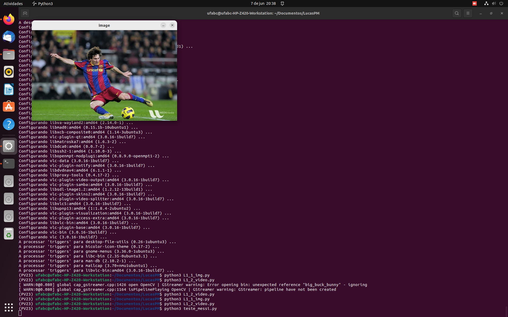
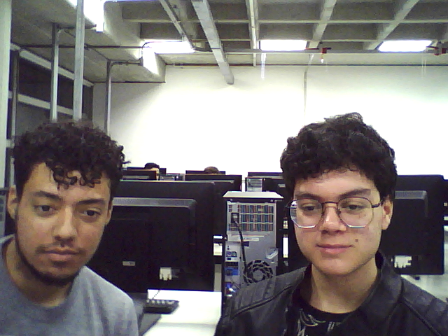

Objetivos
- Iniciar os trabalhos no Ubuntu com o OpenCV
- Conhecer os comandos para visualizar e gravar imagens e videos
- Gravar um Vídeo e mostrá-lo no relatório
PARTE 1
Foi realizada a instalação do OpenCV e do Miniconda3 no ambiente Ubuntu e foi realizada a execução teste dos arquivos disponibilizados pelo professor.
PARTE 2
Foram realizadas quatro tipo de operações, através dos programas e arquivos fornecidos.
A) Por que a janela aberta não mostra a imagem colorida?
Resposta: porque o algoritmo converte a imagem original em um png em escala gray e mostra ela em seguida, podendo ser salva pressionando a tecla S.

B) modifique o programa para que as imagens sejam exibidas mais rápidamente e depois para que sejam exibidas mais lentamente. Responda qual a explicação de alteração de velocidade de exibição, e apresente suas soluções detalhadamente.
Resposta: para alterar a velocidade, basta aumentar o valor do divisor na linha 15, fazendo com que o programa espere menos tempo para passar para o próximo frame. Para diminuir a velocidade, basta diminuir o valor do divisor. A função time.sleep faz com que o programa aguarde uma determinada quantidade de tempo antes de passar para a próxima linha, que no caso é a linha 12, que captura os frames do vídeo.

C) modifique o programa para que uma imagem da câmera seja salva num arquivo “foto1.png” no momento em que for clicada a tecla ‘x’ no teclado. Apresente o resultado e sua solução detalhadamente.
Resposta: para que o arquivo gerado fosse salvo, foi utilizado parte do programa de L1_1_img.py, mais especificamente os comandos waitKey para que o programa registrasse a tecla apertada (X (ignorar comentários no programa)) e o comando imwrite, que salva o frame no arquivo foto1.png.

D) modifique o programa para que as imagens gravadas estejam “normais” no arquivo de video salvo, e apresentem uma velocidade de exibição adequada. Apresente o resultado e sua solução detalhadamente.
Resposta: para inverter a imagem gerada, bastou alterar o valor de 0 para 1 da linha "frame = cv.flip(frame,1)". Para alterar a velocidade de gravação, basta alterar o valor fps da linha "fps = 40", quanto maior o valor, maior a velocidade de gravação.

PARTE 3
A) Foto com todos os integrantes do grupo, tirada usando OpenCV.
B) Montagem dos integrantes com os avatares.

C) Filmem e editem DOIS vídeos com pessoas e DOIS videos com um objeto. A edição foi realizada utilizando o arquivo do item D da parte 2.